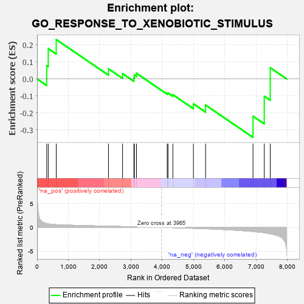
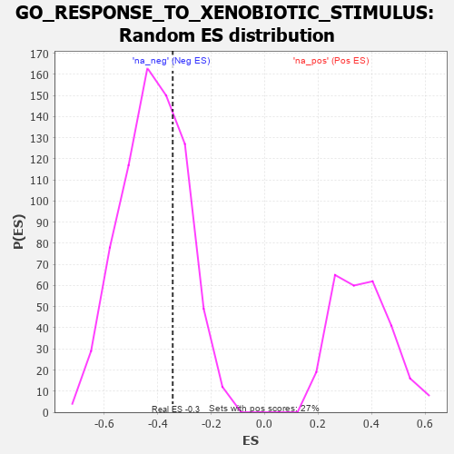

| | | Dataset | 7d |
| Phenotype | NoPhenotypeAvailable |
| Upregulated in class | na_neg |
| GeneSet | GO_RESPONSE_TO_XENOBIOTIC_STIMULUS |
| Enrichment Score (ES) | -0.3435278 |
| Normalized Enrichment Score (NES) | -0.8209134 |
| Nominal p-value | 0.7229081 |
| FDR q-value | 0.98415464 |
| FWER p-Value | 1.0 |
Table: GSEA Results Summary

Fig 1: Enrichment plot: GO_RESPONSE_TO_XENOBIOTIC_STIMULUS
Profile of the Running ES Score & Positions of GeneSet Members on the Rank Ordered List
| PROBE | GENE SYMBOL | GENE_TITLE | RANK IN GENE LIST | RANK METRIC SCORE | RUNNING ES | CORE ENRICHMENT | | 1 | CES2 | | | 308 | 0.809 | 0.0777 | Yes |
| 2 | ARNT | | | 357 | 0.741 | 0.1784 | Yes |
| 3 | MCM7 | | | 612 | 0.591 | 0.2316 | Yes |
| 4 | AIP | | | 2281 | 0.263 | 0.0598 | No |
| 5 | RORA | | | 2730 | 0.193 | 0.0313 | No |
| 6 | TIGAR | | | 3091 | 0.138 | 0.0059 | No |
| 7 | GPX1 | | | 3109 | 0.135 | 0.0233 | No |
| 8 | AHR | | | 3175 | 0.126 | 0.0332 | No |
| 9 | HNF4A | | | 4157 | -0.034 | -0.0852 | No |
| 10 | FMO1 | | | 4181 | -0.038 | -0.0825 | No |
| 11 | ACY1 | | | 4336 | -0.066 | -0.0924 | No |
| 12 | AOC1 | | | 4993 | -0.197 | -0.1465 | No |
| 13 | GRIN1 | | | 5381 | -0.291 | -0.1532 | No |
| 14 | MGST3 | | | 6896 | -0.865 | -0.2190 | No |
| 15 | GSTM1 | | | 7256 | -1.129 | -0.1016 | No |
| 16 | GGT1 | | | 7447 | -1.329 | 0.0659 | No |
Table: GSEA details [plain text format]

Fig 2: GO_RESPONSE_TO_XENOBIOTIC_STIMULUS: Random ES distribution
Gene set null distribution of ES for GO_RESPONSE_TO_XENOBIOTIC_STIMULUS